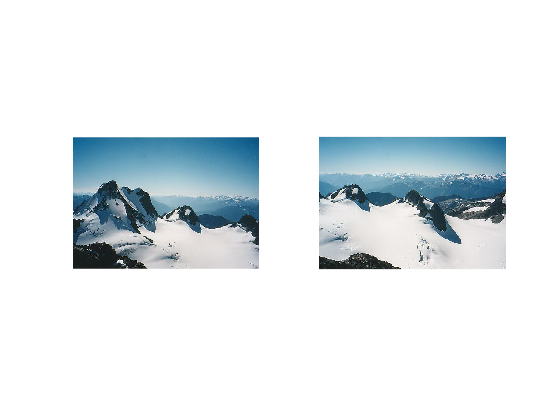
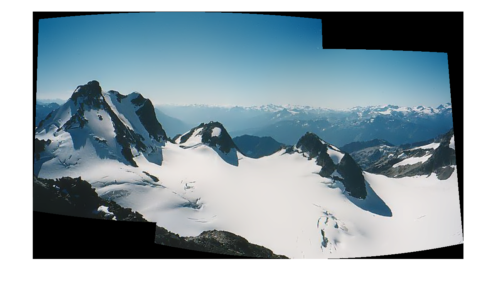

Simple rotation model images stitcher
A basic example on image stitching.
In this demo, we show how to use the high-level stitching API provided by cv.Stitcher, and we learn how to use preconfigured stitcher configurations to stitch images using different camera models.
Sources:
Contents
Input images (two or more)
imgs = {
imread(fullfile(mexopencv.root(),'test','b1.jpg')), ...
imread(fullfile(mexopencv.root(),'test','b2.jpg'))
};
for i=1:numel(imgs)
subplot(1,numel(imgs),i), imshow(imgs{i})
endOptions
% Try to use GPU. The default value is false. % All default values are for CPU mode. try_use_gpu = false; % Determines configuration of stitcher. The default is 'Panorama' mode % suitable for creating photo panoramas. Option 'Scans' is suitable for % stitching materials under affine transformation, such as scans. smode = 'Panorama'; % Internally create three chunks of each image to increase stitching success divide_images = false;
if divide_images for i=1:numel(imgs) sz = size(imgs{i}); imgs{i} = { cv.Rect.crop(imgs{i}, [0 0 sz(2)/2 sz(1)]), ... cv.Rect.crop(imgs{i}, [sz(2)/3 0 sz(2)/2 sz(1)]), ... cv.Rect.crop(imgs{i}, [sz(2)/2 0 sz(2)/2 sz(1)]) }; end imgs = [imgs{:}]; end
Stitch
stitcher = cv.Stitcher('Mode',smode, 'TryUseGPU',try_use_gpu); tic pano = stitcher.stitch(imgs); toc
Elapsed time is 1.139193 seconds.
Panorama result
figure, imshow(pano)